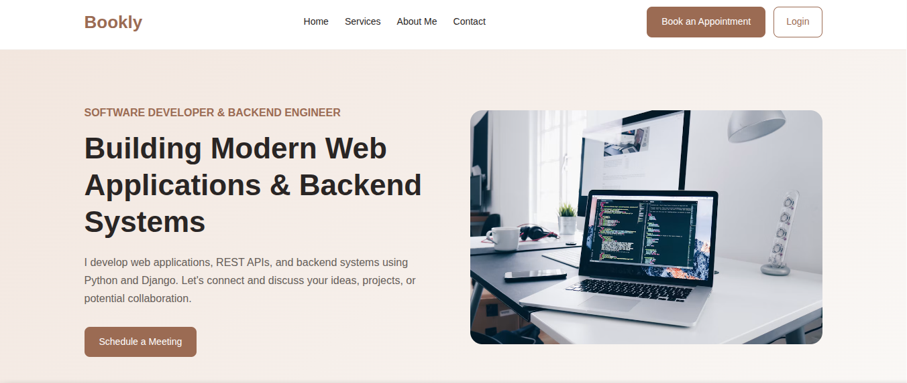

Bookly — Appointment Booking System
A web-based appointment booking system that allows users to browse available time slots, book appointments, and manage their reservations. It includes temporary booking holds to prevent multiple users from reserving the same time slot, along with automated weekly booking slot generation.
Python · Django · Django REST Framework · PostgreSQL · JavaScript